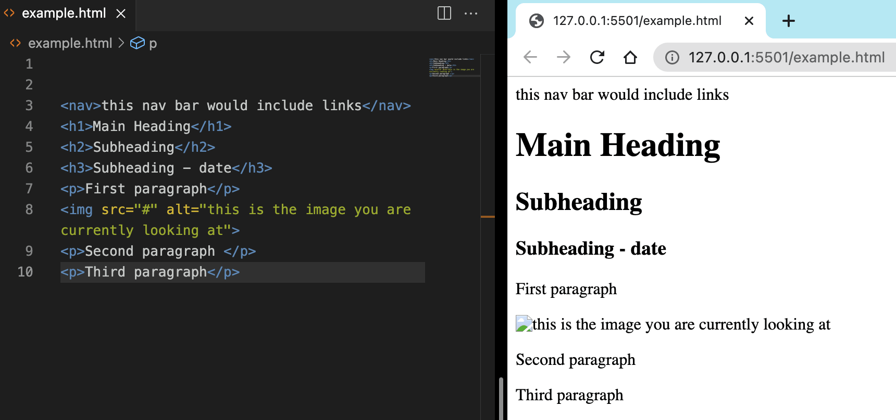

CSS Selectors: Class and ID best practices
technical blog
11 February 2022
When styling a web page we need a way to tell the computer which element we want it to add a certain style to. There are a few different ways to go about this but for today we will talk about the class and id selectors. They both have their own uses and rules which make how we work with them different so knowing the difference and best practices is vital.
A couple of quick definitions:
- A selector, as the name suggests, is a way to select a part of the html so you can add some styling to it.
-
An id selector is a way to give an element a unique identifier which we can then use to select it. We
define it in the html using id=”id-name” and use it in css: #id-name {styles to change}
-
A class selector is a way to give an element a common identifier which we can then use to select it
and
any other elements with the same class. We define it in the html using class=”class-name” and use it in css:
.class-name {styles to change}
Take the page you are reading this on as an example. There are lots of different p tags in the screenshot, how do we tell the computer which paragraph we want to style? By giving the tags class and id selectors we can target different elements and make changes to them.
Class selectors are used to set common styles across one or more elements. For example - we want to change the font of all of the text in the blogpost we could give every text element a class=”blog-text” and then in css use:
.blog-text {
font-family: sans-serif;
color: black;
}
This is really powerful as it means we can use classes to create consistent styles and uniform designs across different pages of a website. As long as you are connected to the same css file, any page you want to have the same font you can set the class to blog-text. This also makes it really easy to update styles when you want to change how pages look - you can change the font in the css class and it will be reflected across all of the html elements with that class. You can add multiple classes to an element and classes can be used across multiple elements.
id selectors are used to set styles unique to one element. This will become a lot more important later when using JavaScript so while using CSS we should start some good habits. IDs have greater priority over classes which can be useful when you are wanting to change part of a style on one element. Continuing our example of styling this page - we have already set all of the text to sans-serif and black but now we decide that this paragraph is really special and we want to apply some one off, never to be seen again styling like making the text colour coral. So we can give it an id=”special-paragraph”:
.blog-text {
font-family: sans-serif;
color: black;
}
#special-paragraph {
color: coral;
}
You can only add one id to an element and an id can only be used on one element in an html page. This is very important! It won’t pass a validation check and some browsers won’t display properly.
Final Thoughts:
- Because of their versatility and re-usability classes are a good first go-to when choosing which selector to use. You don’t have to use a class on more than one element but by choosing class you have the option to use that class on other elements later without having to change your code
- Because of their unique nature ids are only used for an element which might be completely unique in some way - either for identification, styling or overriding the generalised class styling
- You can give an element both classes and an id
- Be specific in naming both id and classes - you want to make it easy for you and other people looking at your code to understand
Now I‚Äôm off to go make some changes to my classes and ids üôÉ